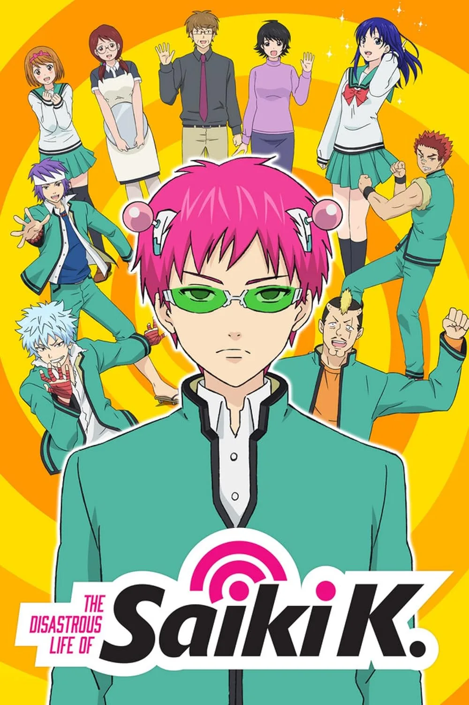

Hey👋
I'mToffee,self-taughtdeveloperpassionateaboutbuildingwebapplications.
About Me
I specialize in front-end development, user experience, and digital minimalism. Currently exploring web performance and privacy-respecting technologies.
I mostly work with lightweight, privacy-respecting tools and minimal setups.
My principles: minimalism over complexity, learn by building, privacy matters, prefer tools I can control.
Shows I like


Skills
Toolbox: I mostly work with lightweight, privacy-respecting tools and minimal setups. Here are a few I use regularly.
Toolbox
Interests
I enjoy deep storytelling and creative coding experiments. I sometimes draw inspiration from anime, game design, or forgotten tech.
Presence
No social media. Just this page.